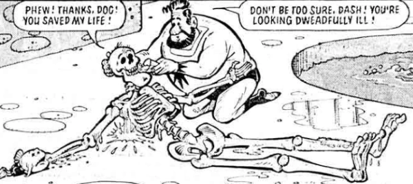

An entertaining pastiche of old black & white Saturday morning serializations of Flash Gordon.
Art by Kevin O'Neill
| Story Title | Parts | Pages | w indicates a wraparound coverCovers | Year(s) | Issues | Writer | Artist | Colourist | Letterer |
|---|---|---|---|---|---|---|---|---|---|
| Peril on Pongo | 20 | 21 | 0 | 1980-1981 | Reprints: 2KYB'92178-179, 181-198 | Dave Angus Kevin O'Neillvarious | Kevin O'Neill | [b&w] | Tom Frame |
| Special Effects | 1 | 2 | 0 | 1981 | 2KA'82 | Kevin O'Neill | Kevin O'Neill | [b&w] | Tom Frame |
| >> Teasers << | |||||||||
| Peril on Pongo | 1 | 0.5 | 0 | 1980 | 175 | unknown | Kevin O'Neill | [b&w] | unknown |
| year | episodes | pages |
| 1977 | 0 | 0 |
| 1978 | 0 | 0 |
| 1979 | 0 | 0 |
| 1980 | 14 | 15 |
| 1981 | 7 | 8 |
| 1982 | 0 | 0 |
| 1983 | 0 | 0 |
| 1984 | 0 | 0 |
| 1985 | 0 | 0 |
| 1986 | 0 | 0 |
| 1987 | 0 | 0 |
| 1988 | 0 | 0 |
| 1989 | 0 | 0 |
| 1990 | 0 | 0 |
| 1991 | 0 | 0 |
| 1992 | 0 | 0 |
| 1993 | 0 | 0 |
| 1994 | 0 | 0 |
| 1995 | 0 | 0 |
| 1996 | 0 | 0 |
| 1997 | 0 | 0 |
Core comic strip data (excludes other content):